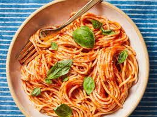

Pomodoro Sauce
This delicious and authentic pomodoro sauce is perfect for a date night in, or just a family dinner that everyone can enjoy.
Perfect when just served with pasta, but can also be used for things like chicken parmesan. A simple and easy dish that doesn't taste like it.
This dish is great to make ahead a day or two, and also freezes well.
Ingredients
- 3 28 oz cans of whole peeled tomatoes
- 2 Tbsp olive oil
- 1/2 peeled and finely minced yellow onion
- 4 finely minced garlic cloves
- 12-15 fresh basil leaves
- sea salt and pepper to taste
- cooked pasta of choice
Steps
- Add the tomatoes to a blender or food mill and blend until smooth. Set aside.
- Add the olive oil to a large pot over low head and add in the oinions and garlic. Cook until transluscent, about 10 minutes.
- Pour pureed tomatoes and stew over low to medium heat for 30 minutes.
- Finish by stirring in basil, salt, and pepper.
- Toss with pasta and parmesan cheese.
Home